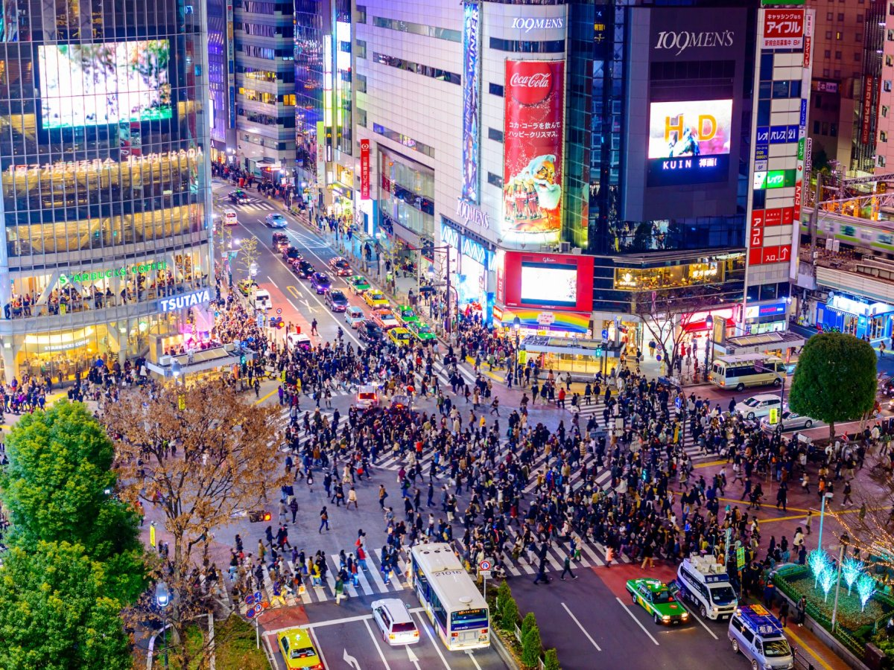
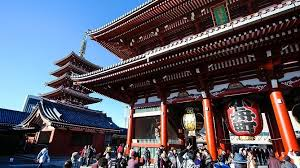

Top Attractions in Tokyo

Tokyo Tower
Ikonični simbol Japana, koji ponuđuje lijepe poglede na grad.

Shibuya Crossing
Najprometniji pješački prijelaz na svijetu, simbol energije Tokija.

Sensoji Temple
Povijesni budistički hram u Asakusi, najstarijem i najznačajnijem hramu u Tokiju.